收薄螯尖、足端和重复背甲边，保留尾针；背脊、腹面和夹击内面分层。参考Alex龙虾的螯与细足比例。
软件对照：左旧右新，相同相机与共同取景范围。以下所有软件模型均逐面采样实际PNG。
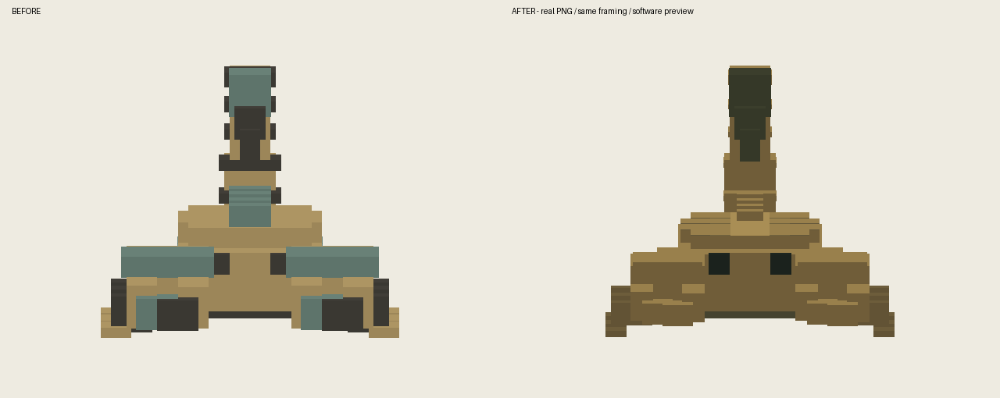
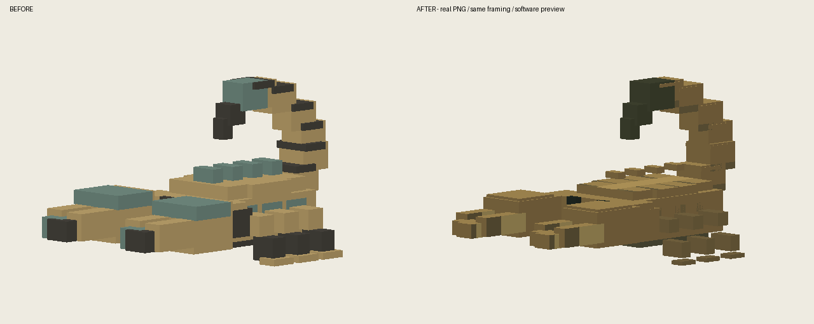
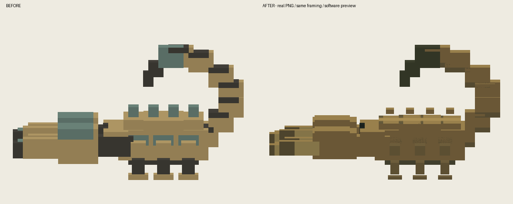
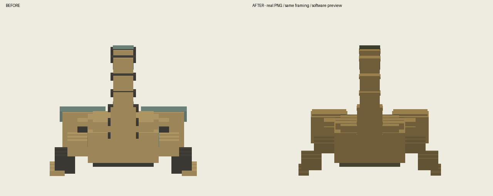
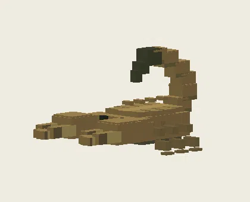
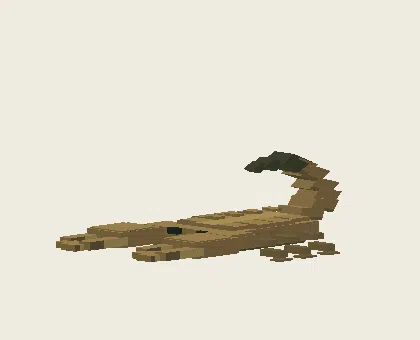
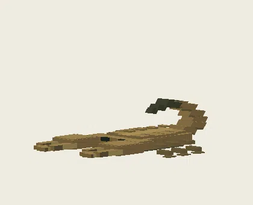
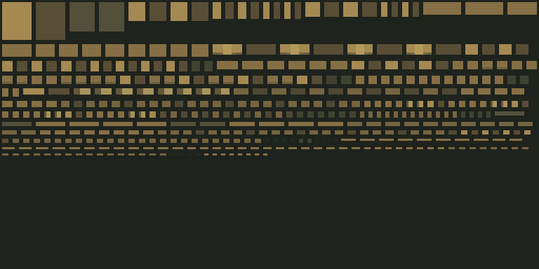
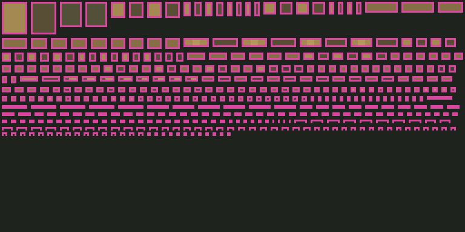
隔离静音测试存档；验证加载、原动作与重载，不代表自然战斗或多人验收。
36-mingsha_shixie-front
37-mingsha_shixie-45
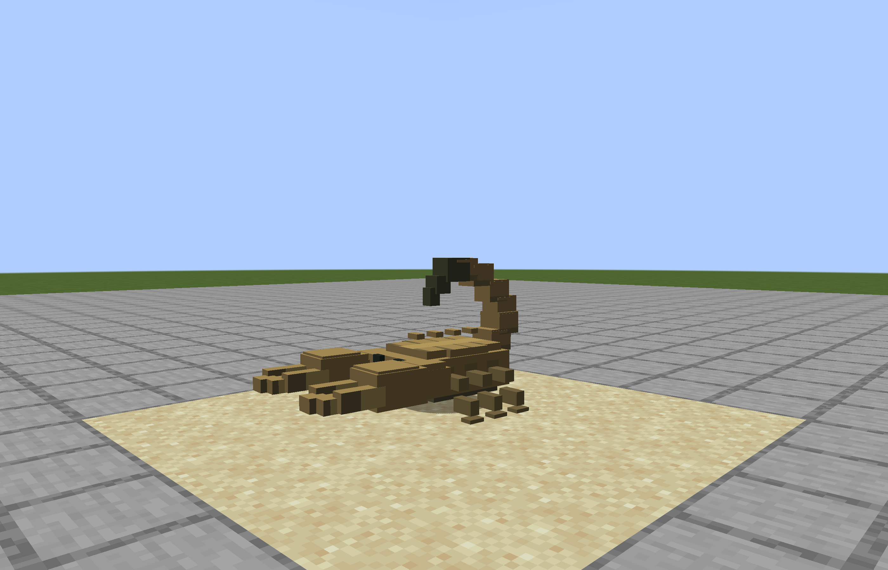
38-mingsha_shixie-side
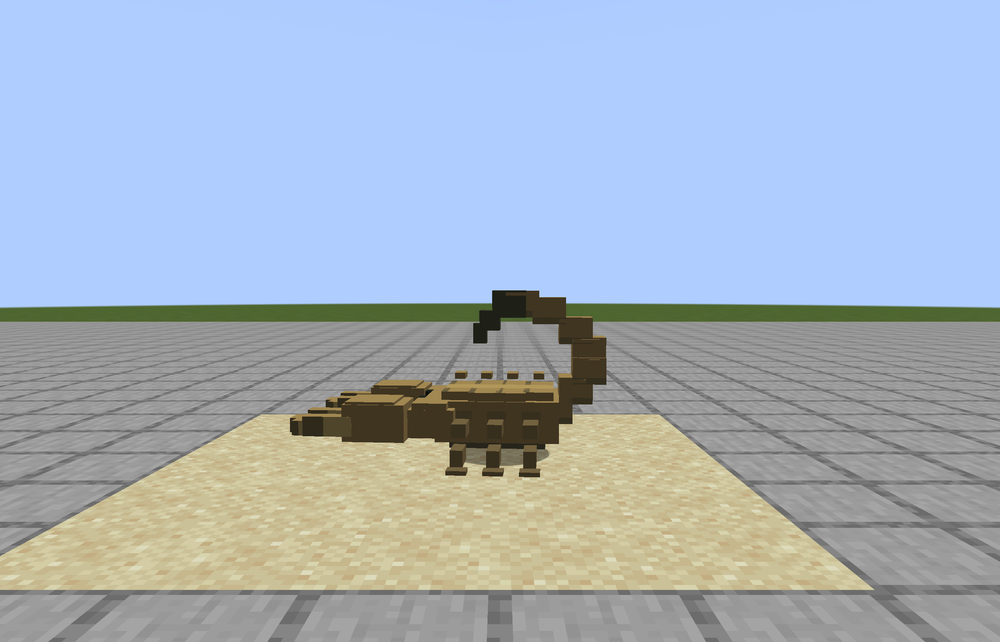
39-mingsha_shixie-back
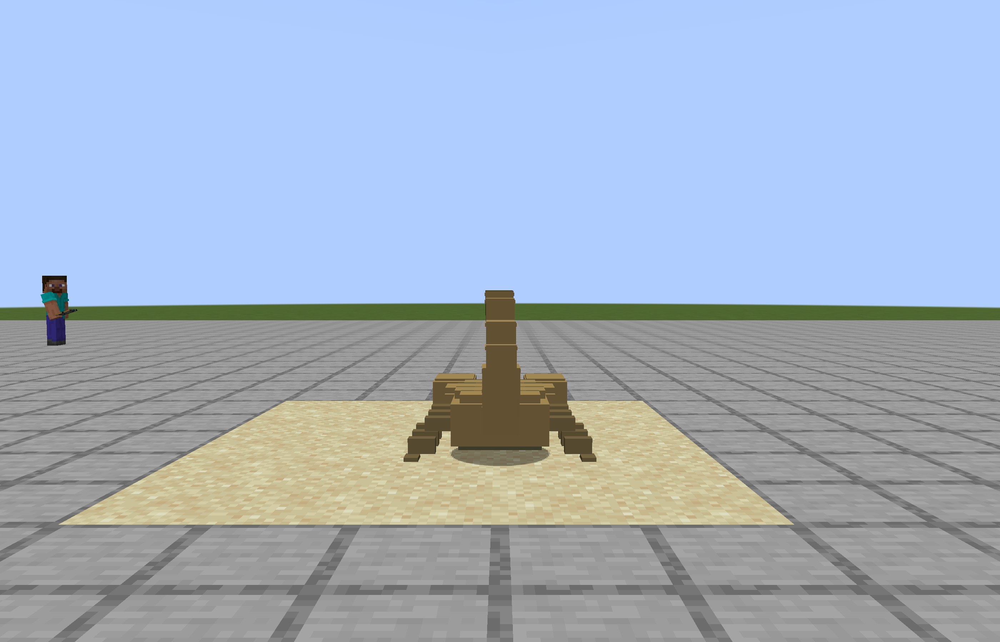
40-mingsha_shixie-walk
41-mingsha_shixie-run
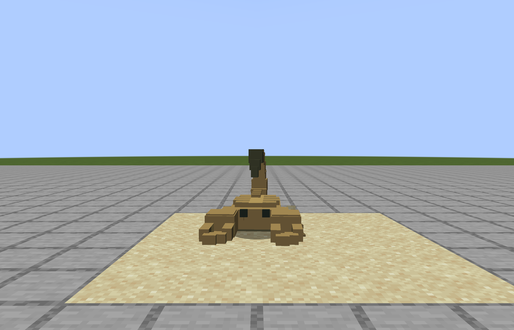
42-mingsha_shixie-attack-tell
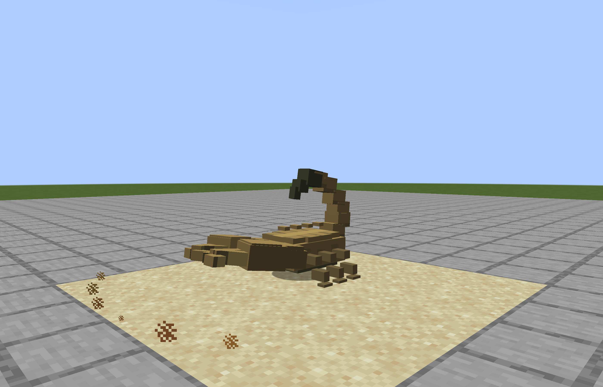
43-mingsha_shixie-attack-contact
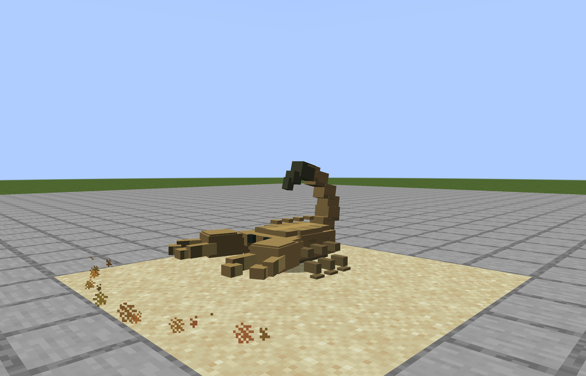
44-mingsha_shixie-special-tell
45-mingsha_shixie-special-contact
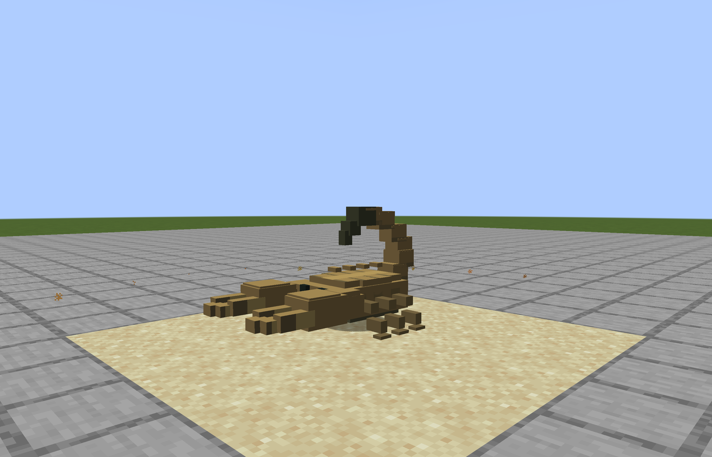
46-mingsha_shixie-hurt
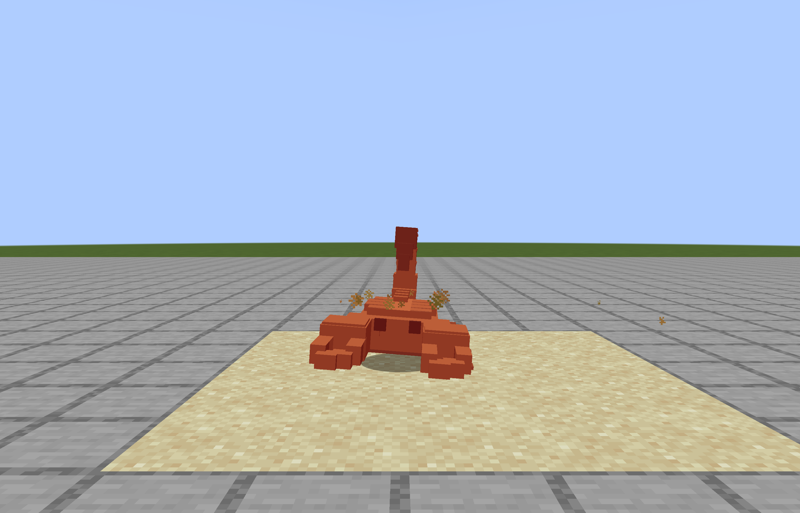
47-mingsha_shixie-death
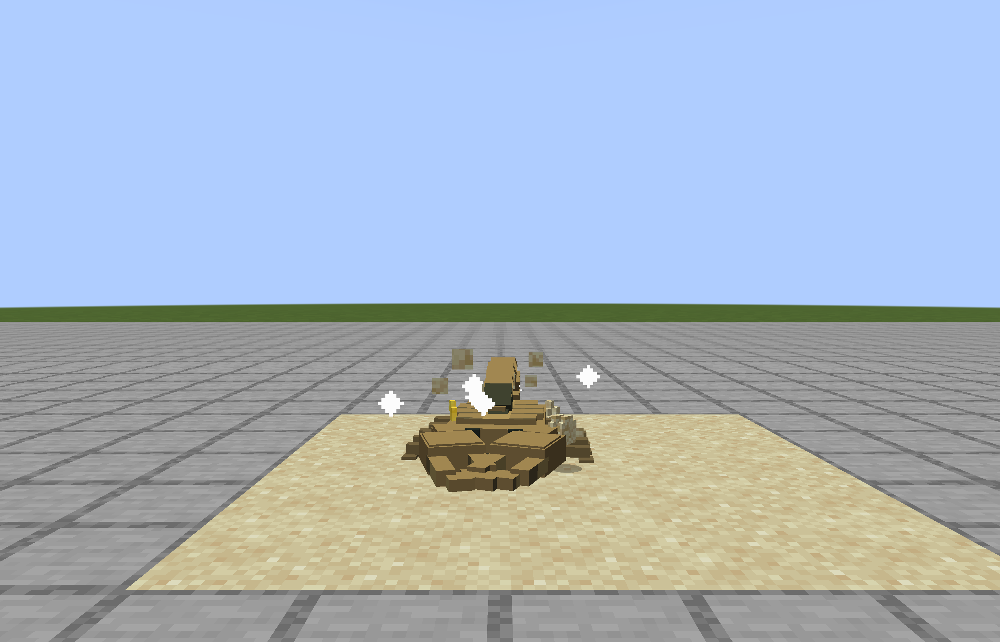